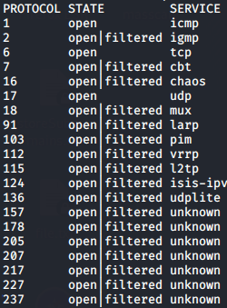

-sO: IP protocol scan
IP protocol scan allows you to determine which
Internet
protocols(IP) like TCP, ICMP, IGMP, etc. in the Internet layer are supported by target machines.
This
isn't technically a port scan, since it cycles through IP protocol numbers rather than TCP or UDP port numbers.
If Nmap receives any response in any protocol from the target host, Nmap marks that protocol as
open.
example
nmap -n -sO 192.168.1.97 --disable-arp-ping
Bibliography:
https://nmap.org/book/scan-methods-ip-protocol-scan.html